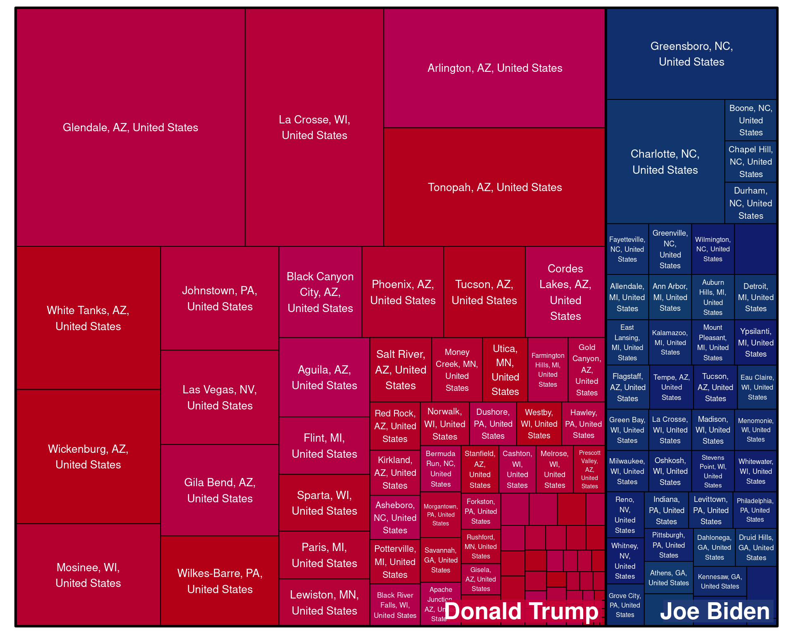

Targeting
This section shows spening per targeting criteria used by political candidates to reach citizens in the run-up to the 2024 US Presidential Primaries for the latest available data.
Spending per Targeting Criteria
How much did campaigns spend on different targeting methods? The graphs below show spending overall across all candidates and by candidate.
Note: targeting criteria can overlap so the percentages do not sum up to 100%.
Detailed Audiences
Top Targeted (Detailed) Audiences
Here, we show the top targeted audiences for each candidate for the “detailed” targeting that Meta offers (ranked by amount of Euro spend). Most (but not all) of these audiences are “interest” audiences, i.e. the parties targeted people interested in “Books” or “Politics”.
Top Excluded (Detailed) Audiences
Here, we show the top excluded audiences for each candidate for the “detailed” targeting that Meta offers (ranked by amount of Euro spend). Most (but not all) of these audiences are “interest” audiences, i.e. the parties excluded people interested in “Books” or “Politics”.
Top Contested Audiences
Here, we show the top most contested audiences, i.e. where all parties have spent considerable amounts of money competing to reach voters with the same interests.
No data (yet).
No data (yet).
Location
Geographical Targeting
The graphs below show various kinds of location targeting that parties engaged in on Meta platforms. The bigger the area the more money was spend by the candidate on targeting this location.


Geographical Exclusion
On Meta, political parties can also exclude certain geographical units. The graphs below show which locations were excluded from seeing political advertisements and how much money the parties spend on these ads. The bigger the area the more money was spend on ads excluding this location.

No data (yet).
Demographics
Age Targeting
The graphs below show targeting by age groups and how much percentage of candidate budgets were spent on them.
Note: targeting criteria can overlap so the percentages do not sum up to 100%.
Gender Targeting
The graphs below show targeting by gender and how much percentage of candidate budgets were spent on them.
Note: targeting criteria can overlap so the percentages do not sum up to 100%.
No data (yet).
No data (yet).
Education Targeting
The graphs below show targeting by education levels and how much percentage of candidate budgets were spent on them.
No data (yet).
No data (yet).
Job Targeting
The graphs below show targeting by job (sectors) and how much percentage of candidate budgets were spent on them.
Note: targeting criteria can overlap so the percentages do not sum up to 100%.